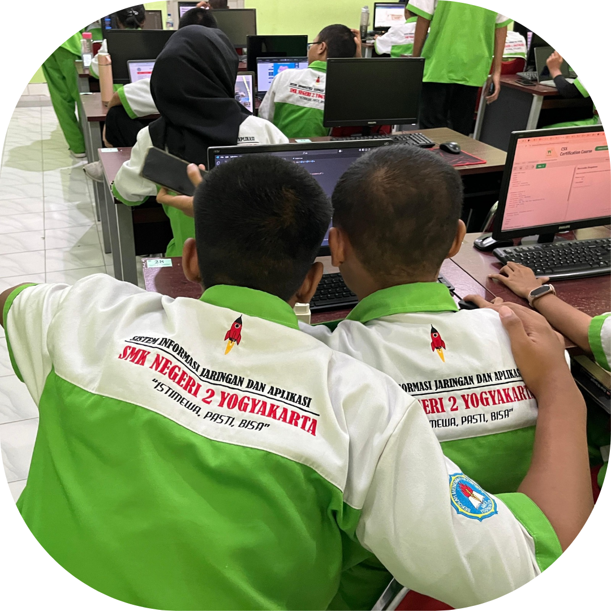
Sistem Informasi
Jaringan Dan Aplikasi
Sistem Informasi dan Jaringan SMK Negeri 2 Yogyakarta , berdiri sejak tahun 2020. SMK Negeri 2 Yogyakarta beralamat di Jl. AM Sangaji 47 Yogyakarta menempat gedung D. Dengan dibukanya program studi teknik komputer dan jaringan ini diharapkan mampu membekali peserta didik dengan ketrampilan, pengetahuan dan sikap yang luhur agar kompeten dalam dunia kerja baik secara mandiri atau dalam DU/DI sebagai tenaga kerja tingkat menengah yang terampil dalam bidang Teknik Komputer dan Jaringan dan berkarakter sesuai dengan misi dan visi dari SMK Negeri 2 Yogyakarta. Akreditasi untuk program studi teknik komputer dan jaringan adalah A.
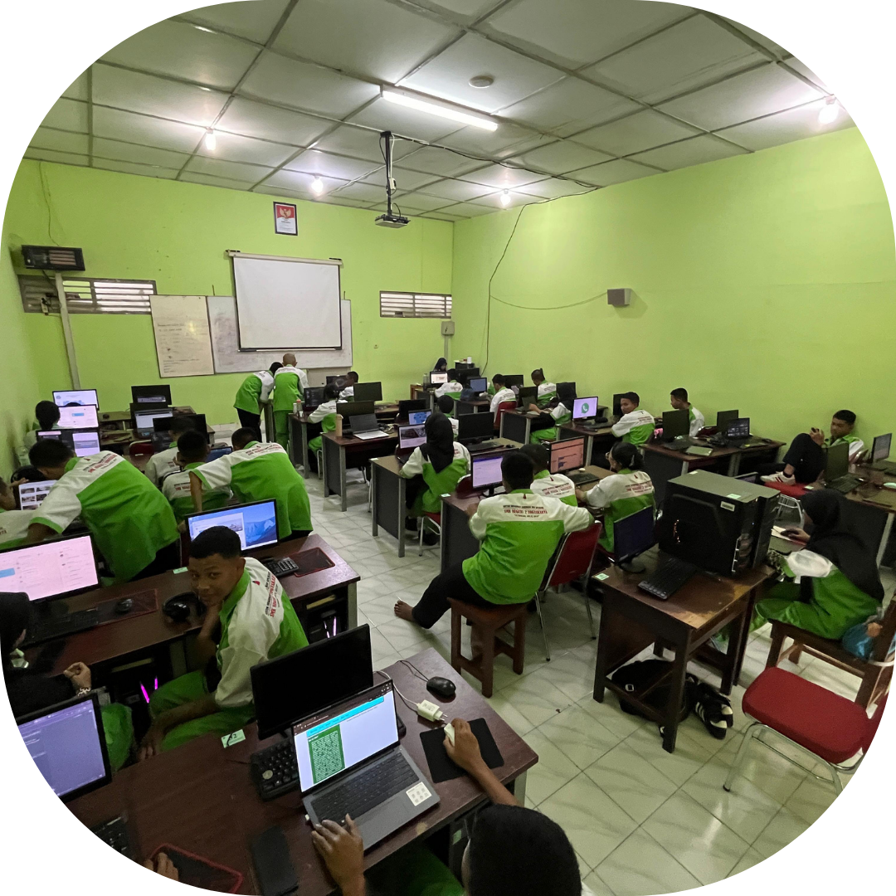
Tujuan Sistem Informasi
Jaringan Dan Aplikasi
1. Menginstal perangkat jaringan LAN dan WAN.
2. Menginstal komputer personal, sistem operasi, dan aplikasi.
3. Merancang dan mengelola server jaringan berbasis luas.
4. Membentuk peserta didik yang mandiri, bertanggung jawab, dan berkarakter.
5. Menanamkan pola hidup sehat, wawasan seni, pengetahuan, dan lingkungan.
6. Membekali keahlian di bidang Teknik Jaringan Komputer untuk dunia kerja.
7. Menyiapkan peserta didik dalam memilih karir, bersaing, dan bersikap profesional.
8. Memberikan dasar ilmu dan keterampilan untuk yang ingin melanjutkan pendidikan.
Prestasi Sistem Informasi
Jaringan Dan Aplikasi
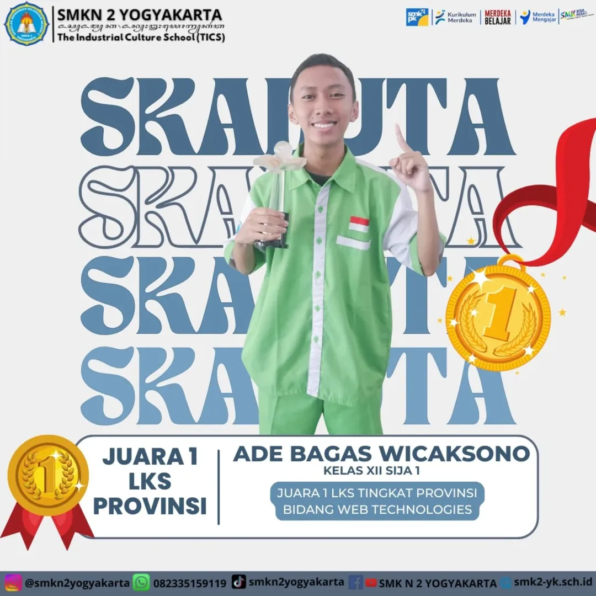
LKS Provinsi
Ade Baagas Wicaksono
KELAS XII SIJA 1
Juara 1 LKS Tingkat Provinsi Bidang Web Technologies
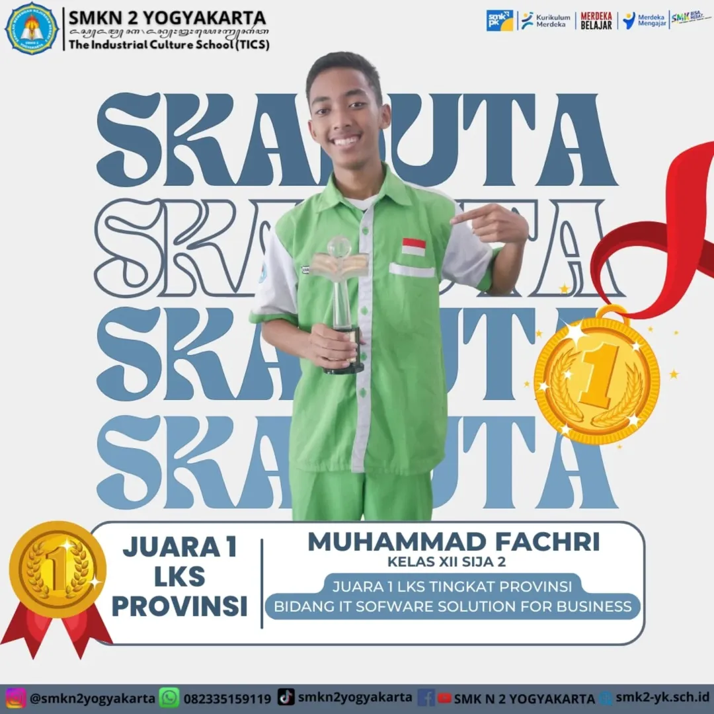
LKS Provinsi
Muhammad Fachri
KELAS XII SIJA 2
Juara 1 LKS Tingkat Provinsi Bidang IT Software Solution For Business
LKS Provinsi
Tirta Hakim Pambudhi
KELAS XII SIJA 2
Juara 1 LKS Tingkat Provinsi Bidang Cloud Computing
ALBUM SISTEM INFORMASI
JARINGAN DAN APLIKASI
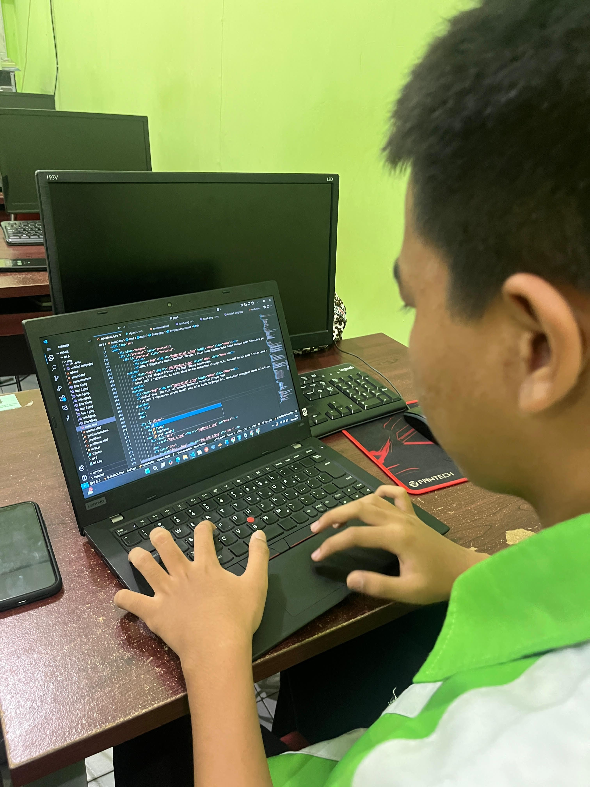
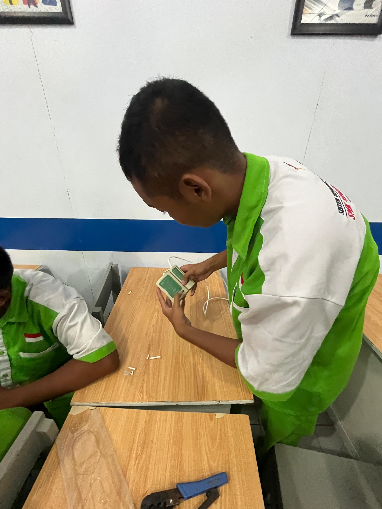
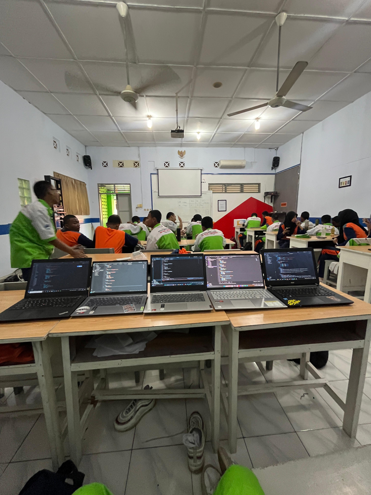
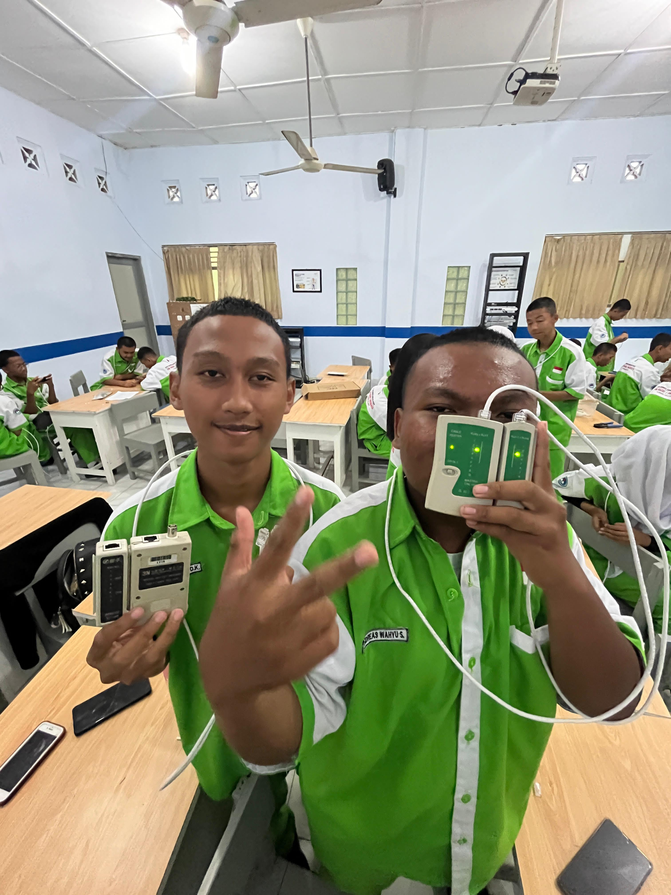
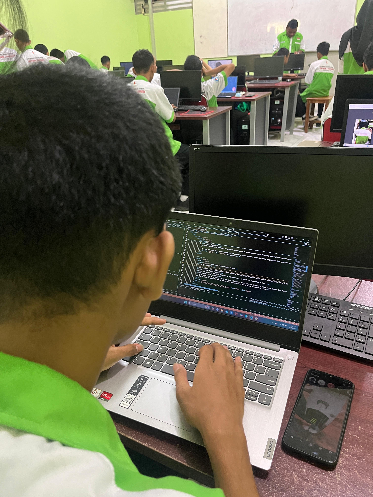
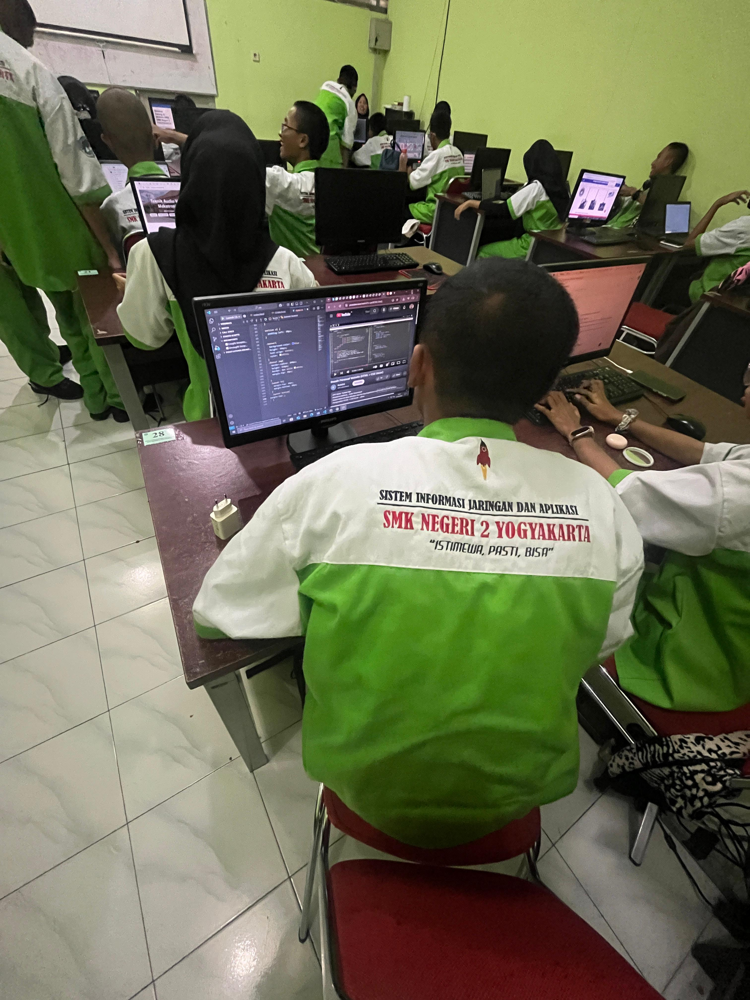
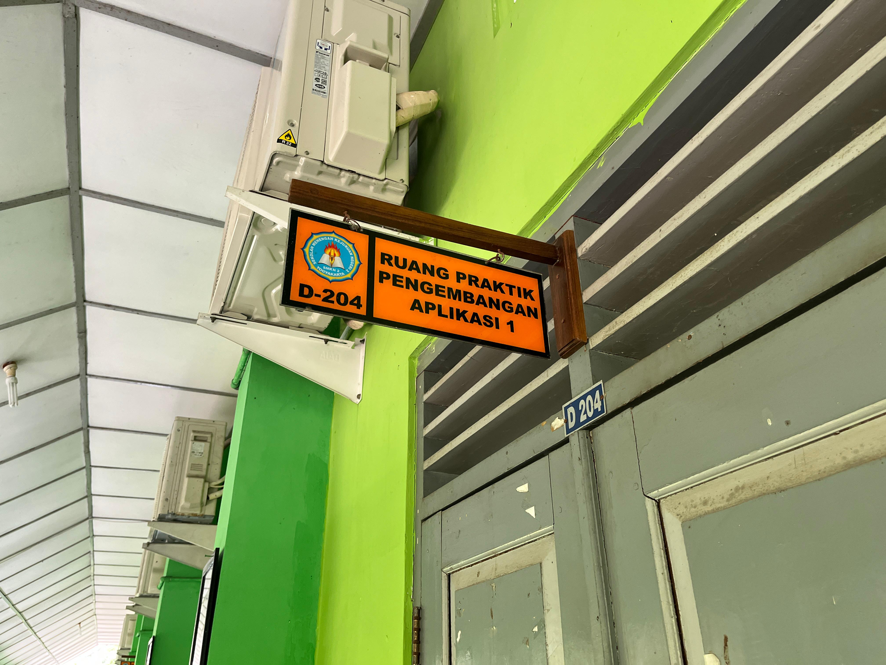
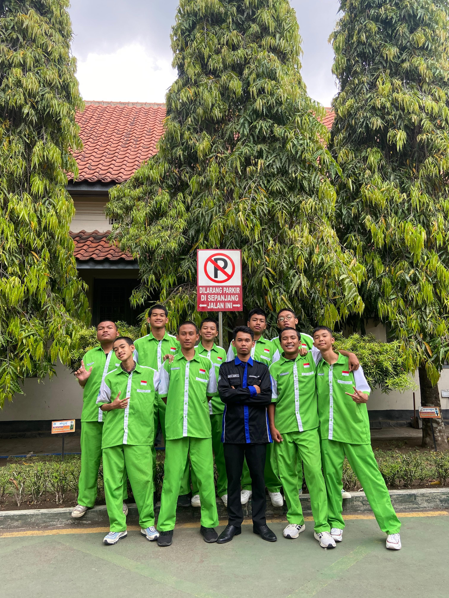